↑
NEVA

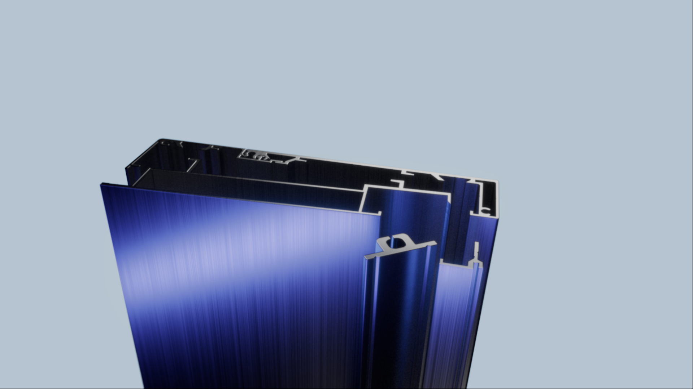
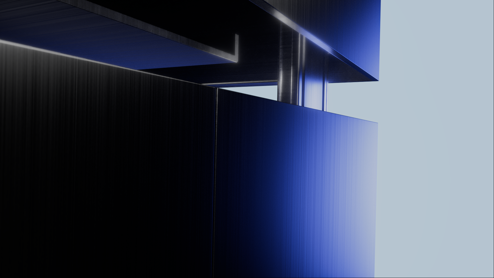
Architectural visualization as atmosphere — a residential project rendered at the intersection of raw concrete, soft light, and landscape silence.
3D artist & visual director. I make things look better than real.


Architectural visualization as atmosphere — a residential project rendered at the intersection of raw concrete, soft light, and landscape silence.
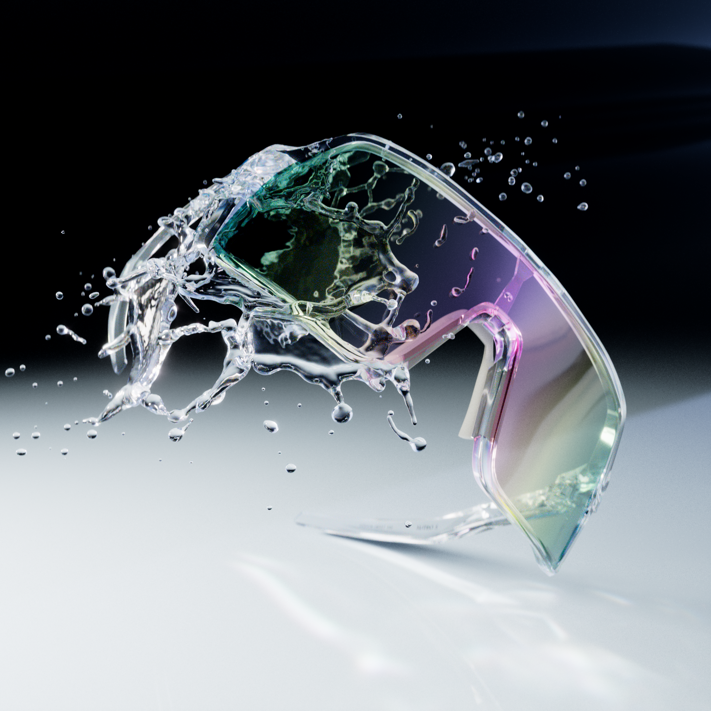
Optical geometry pushed to its edge — a full CGI eyewear campaign built on form, light refraction, and the idea that glass can feel alive.
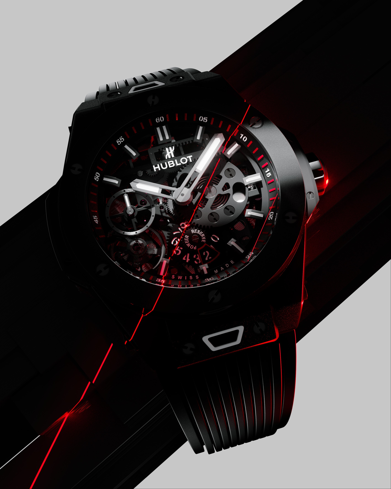
A precision render for the Big Bang — where the complexity of a mechanical movement meets the language of high-end CGI product photography.
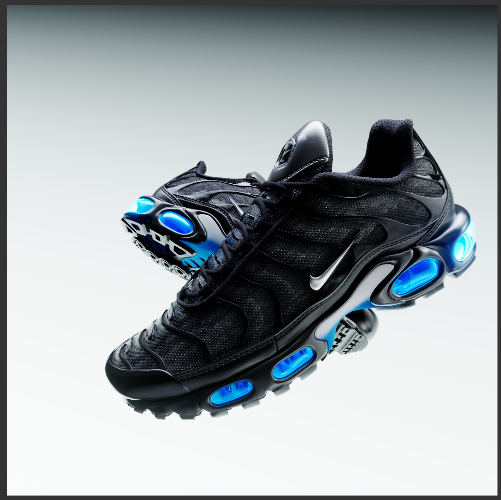
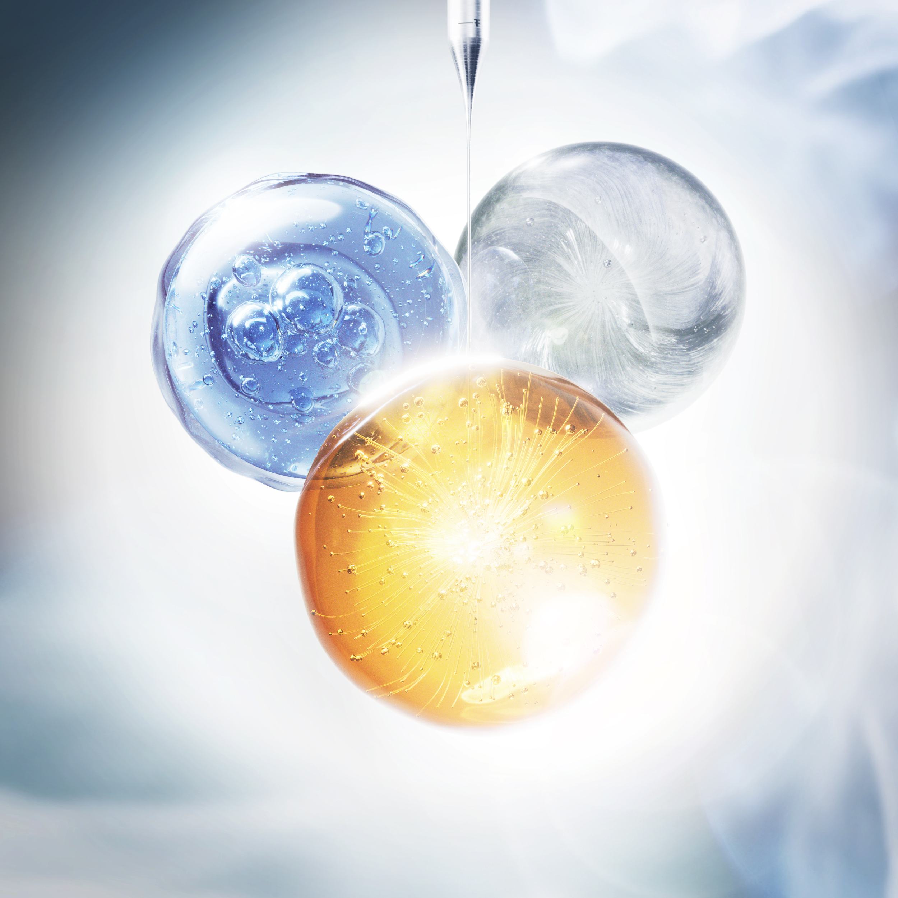
Two campaigns rooted in material confidence — the kinetic tension of a sole mid-flight and the luminous stillness of a beauty hero shot.
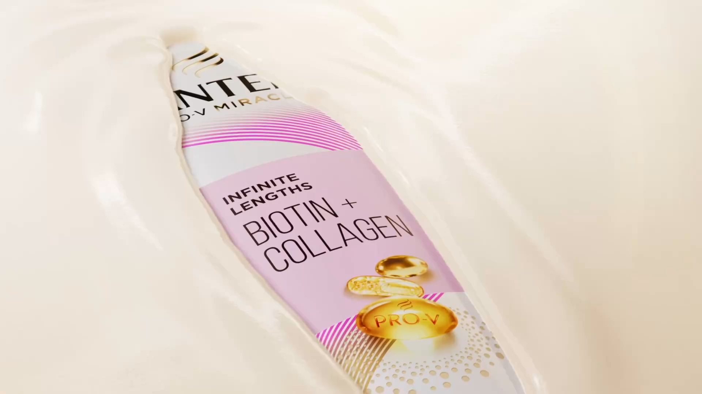
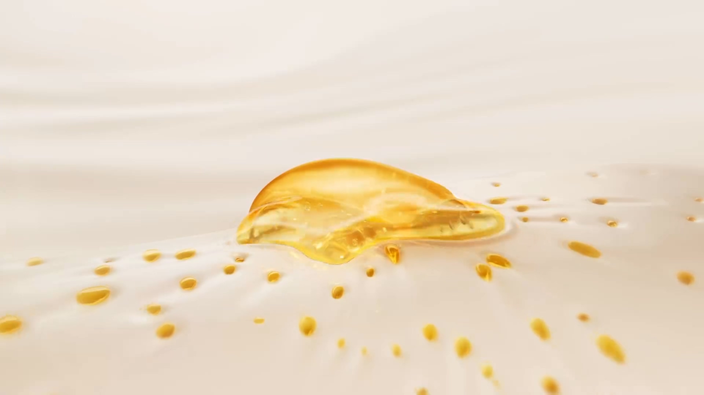
A full CGI campaign for Pantene Pro-V Miracle — hero shots built on motion, fluid dynamics, and the visual language of transformation.

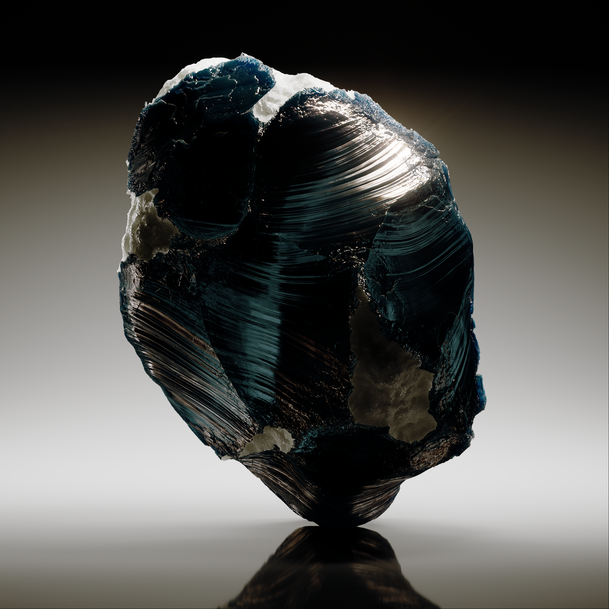
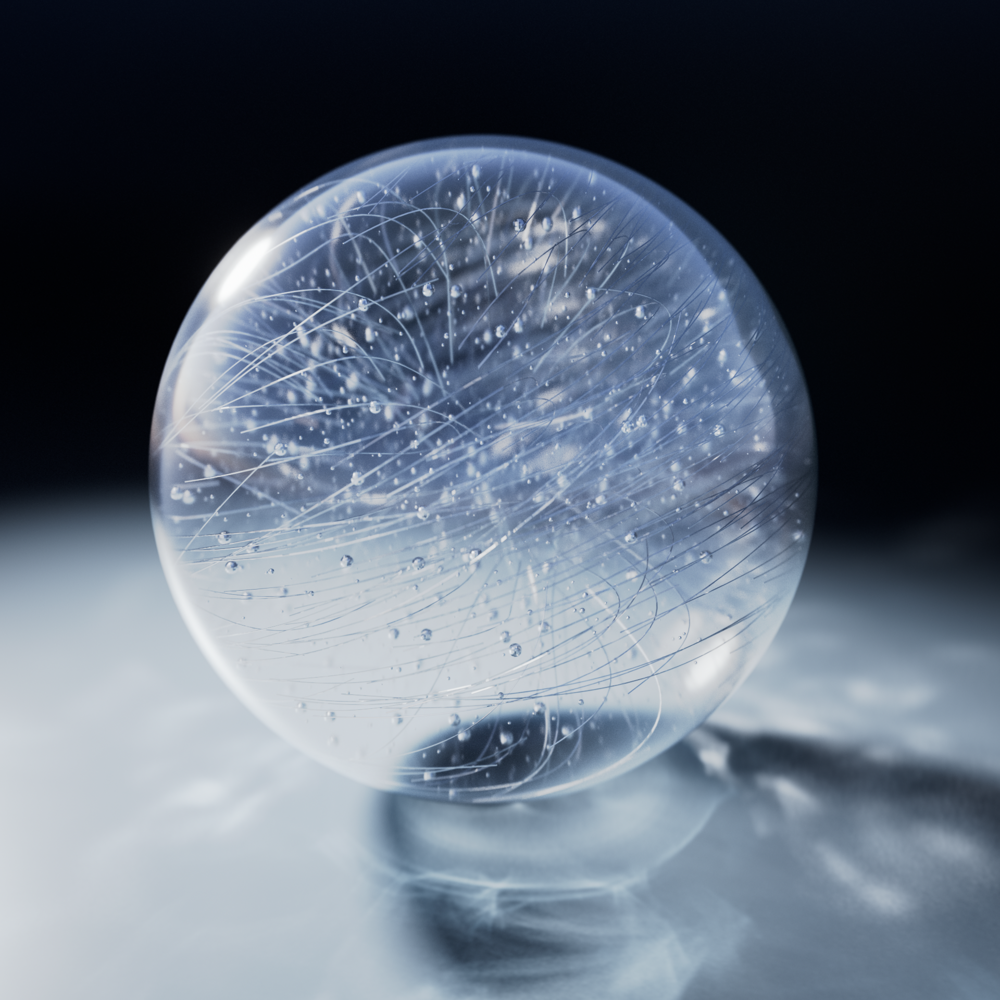
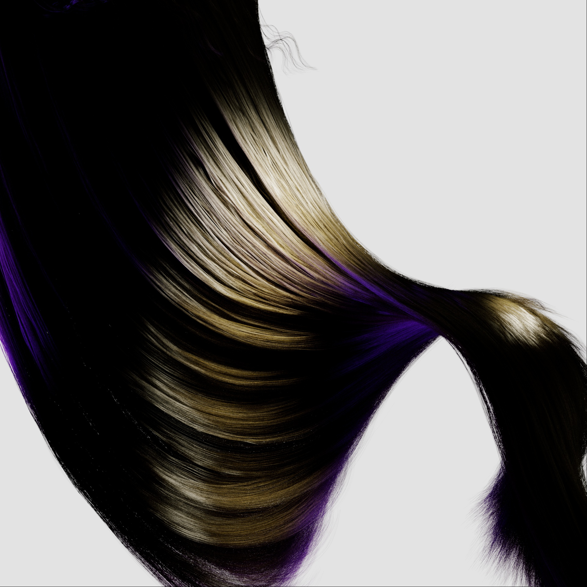
Personal explorations into surface, weight, and texture — fabric under tension, stone rendered with geological patience, glass as a liquid interrupted mid-pour.
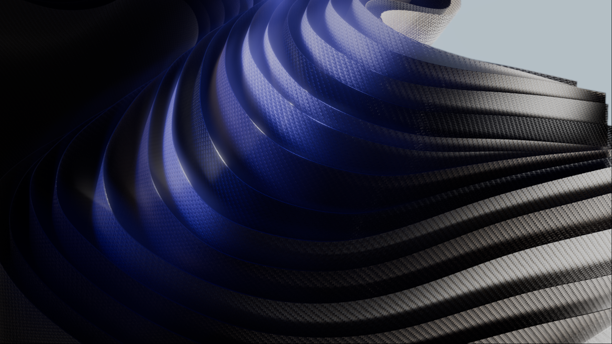
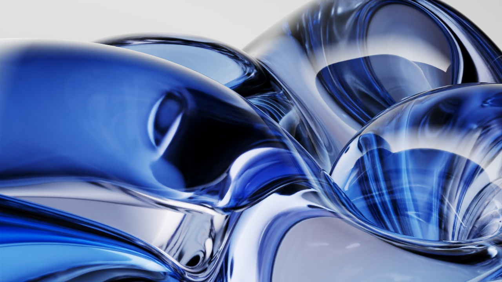
Work that resists category — carbon woven into wave forms, fabric dissolving into air. These pieces exist only to push the renderer further.